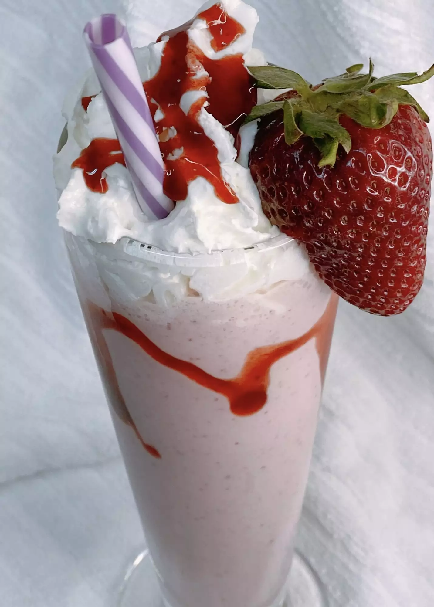

Strawberry MilkShake

Description
With summertime right around the corner and fresh juicy strawberries at their peak, this strawberry milkshake with ice cream is sure to hit the spot!
Ingredients
- ⅓ cups 1% milk
- 8 ounces fresh strawberries, hulled
- 4 ounces strawberry ice cream
- 1 tablespoon strawberry syrup, divided
- 1 tablespoon whipped cream (Optional)
- 1 large strawberry for garnish
Steps
- Combine milk, strawberries, and strawberry ice cream in a blender. Blend on high until smooth, about 1 minute.
- Drizzle 1½ teaspoons strawberry syrup on the inside of a glass jar. Pour in milkshake. Garnish with whipped cream and remaining strawberry syrup.
- Take reserved strawberry and carefully cut at an angle but do not cut completely through. Place strawberry on the rim of the glass. Insert a straw and enjoy!